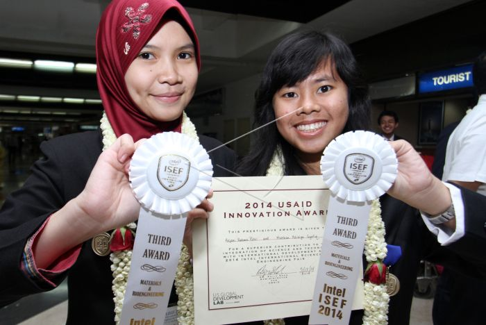

Sertifikat Kami & Progam Online Untuk 2022
Selamat kepada Royani Syauqi Saprudin, siswa kelas X MIPA 3 SMA Negeri 17 Kabupaten Tangerang, yang telah meraih Medali Emas pada kegiatan Asian Youth Chess Championship yang diselenggarakan di Bali pada Tahun 2022
Selamat untuk IBRENA MAYDON NASYA PUTRI, siswi kelas X MIPA 2 SMAN 17 Kab. Tangerang yang telah memperoleh Medali Perak 50m Gaya Punggung dan Medali Perunggu 100m Gaya Punggung dalam Kejuaraan Renang WIJAYA OPEN 2022 Nasional Terbuka.
Keluarga Besar SMAN 17 Kab. Tangerang mengucapkan selamat kepada siswa/i SMAN 17 Kab. Tangerang yang telah dikukuhkan menjadi PASKIBRA Kec. Pagedangan. Semoga sukses dalam melaksanakan tugas di hari kemerdekaan..
comment